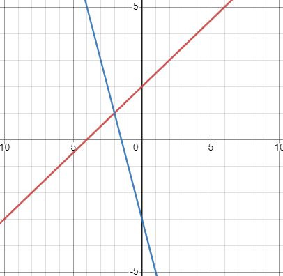

Ways to find the solution of a linear equation are by Graphing, Substitution, and Elimination. Each method has multiple advantages and drawbacks. Graphing can be used to make visual representations but can take a lot of time with complicated equations. Substitution simplifies equations but can become very complex and difficult to keep track of with multiple variables. Elimination makes it easy to handle systems of equations with minimal effort, but can become hard to solve with large coefficients. The decision of which method to use often depends on the equation's complexity and form.
Graphing involves solving systems of equations by representing them as lines on a grid. You take each equation, convert it into "y = mx+b" format, and then plot the lines on a graph. The solution to the system is where the lines intersect, showing the point where all equations are true at the same time. If the lines don't intersect, it means there's no solution that satisfies both equations because they are parallel. Graphing provides a way to visually view equations, determining their intersection points or identifying if they run parallel on the graph to find solutions.
An example of a system of linear equations that can be solved using the substitution method:
y=0.5x+2
y=−2x−3
The two equations are in slope-intercept form.
The first line has a slope of 0.5 and a y-intercept of 2
The second line has a slope of −2 and a y-intercept of −3
Graphing the two lines to find the point of intersection

Since the solution is where the two lines intersect, the answer is (−2,1)
Substitution is a method used to solve systems of equations by replacing one variable with an expression in terms of the other variable. You start with two equations and manipulate one equation to solve for one variable in terms of the other. Then, you substitute that expression into the other equation, creating a new equation with only one variable. This simplification allows you to solve for that variable's value. Once you've found the value for one variable, you can plug it back into one of the original equations to determine the value of the other variable. Substitution is useful when you have an equation where a variable is expressed alone, making it ready to be replaced in the second equation.
An example of a system of linear equations that can be solved using the substitution method:
2x + y = 7
x - y = 1
We can solve this system of equations by using the substitution method. We can solve the second equation for x to get:
x = y + 1
Substituting this expression for x in the first equation, we get:
2(y + 1) + y = 7
Simplifying, we get:
3y = 5
So, y = 5/3. Substituting this value of y in the second equation, we get:
x - (5/3) = 1
Simplifying, we get:
x = 8/3
Therefore, the solution to the system of equations is (8/3, 5/3)
The elimination method is a way to solve systems of equations with two variables. You start with two equations and aim to eliminate one of the variables by adding or subtracting the equations. The goal is to make one of the variables cancel out when you combine the equations. To do this, you manipulate the equations so that the coefficients (the numbers in front of the variables) are the same or opposite. Once you've eliminated one variable, you can solve for the other variable by plugging the value back into one of the original equations. This method is handy when you're dealing with equations that have x's and y's and need to find where they intersect on a graph.
Here is an example of an system of linear equations that has been solved by elimination
x + 2y = 5
3x - 4y = 2
We can solve this system of equations by using the elimination method. First, multiply the first equation by 3 and the second equation by 1 to get:
3x + 6y = 15
3x - 4y = 2
Subtracting the second equation from the first, we get:
10y = 13
So, y = 13/10. Substituting this value of y in the first equation, we get:
x + 2(13/10) = 5
Simplifying, we get the value of x:
x = 9/5
Therefore, the solution to the system of equations is (9/5, 13/10).